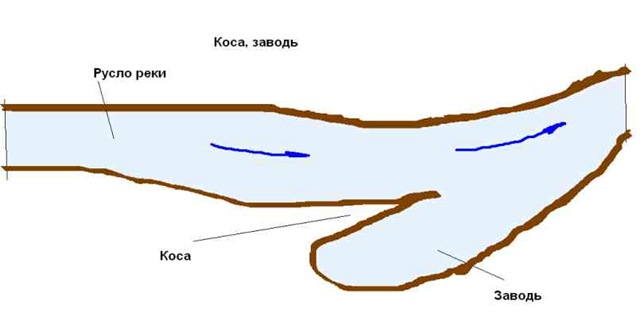
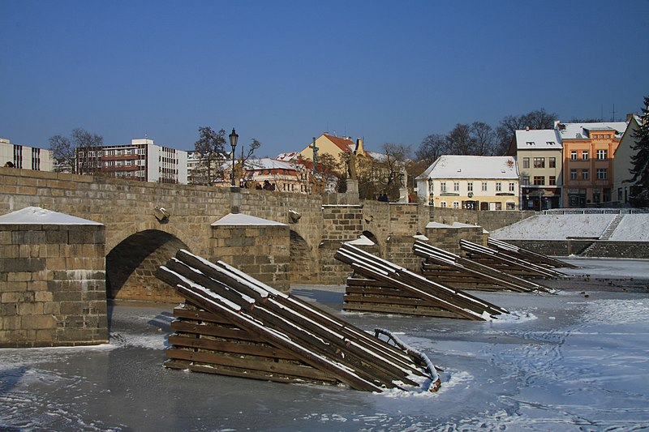
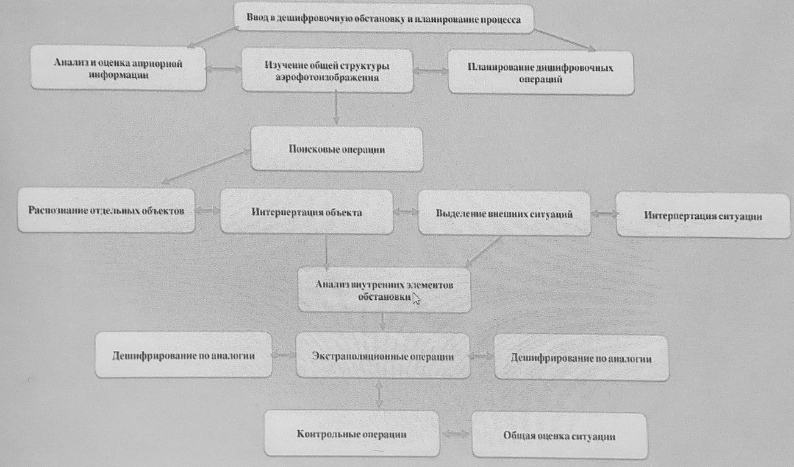

Дешифрирование аэрокосмических снимков
Основано на лекциях Зверева Андрея Владимировича, с использованием "Дешифрования снимков" В. И. Аковецкого, "Аэроландшафтно-индикационных методов при региональных инженерно-геологических исследованиях" С. В. Викторова, А. В. Садова.
Дешифровочные признаки
Дешифрирование - это процесс опознания на аэрофотоснимках объектов местности, выявление их свойств, определение качественных и количественных характеристик.
Дешифровочные признаки - признаки или характеристики объекта или признаки других объектов, позволяющих определить этот объект.
- Прямые дешифровочные признаки напрямую связаны с объектом
- Геометрические: форма, тень, рельеф;
- Яркостные: фототон, цвет;
- Структурные: текстура/структура.
- Косвенные дешифровочные признаки относятся к другим объектам:
- Круги на полях могут свидетельствовать о карстовой воронке;
- Тропинка, пересекающая реку, может свидетельствовать о броде.
По расположению тени на объекте можно определить, отрицательная эта форма рельефа или положительная. Тень бывает падающей и собственной. Собственная тень - это тень, лежащая на самом предмете, подчёркивая его объёмность. Падающая тень - это тень, отбрасываемая предметом, она передаёт его форму в близком к привычному виде. По падающей тени можно легко определить ретрансляторы, трубы и другие высокие объекты.
Контраст тени и фона может превосходить контраст объекта и фона (например, отдельное дерево на лугу, глинобитный дом на глинистой поверхности). В таких случаях тень может быть единственным дешифровочным признаком.
Также по тени можно грубо определить высоту объекта. Для этого можно взять стоящий рядом объект с известной высотой $h'$, и использовать формулу $h=h'\cdot l/l'$, где $l$ и $l'$ - длины теней определяемого и известного объектов соответственно.
Форма бывает определённой (у объектов, связанных с человеческой деятельностью) или неопределённой. Жилые здания обычно делают двух типов: либо вытянутые с большим количеством подъездов, либо очень высокие.
Текстура - это характер распределения спектральной яркости по рисунку изображения.
- Зернистая структура характерна для изображения лесов. Рисунок задаётся серыми пятнами округлой формы (кронами деревьев) на более тёмном фоне, создаваемом затенёнными промежутками между деревьями.
- Однородная структура образуется однотипной формой микрорельефа и характерна для низменных травянистых болот, степной равнины, глинистой пустыни, водоёмов при спокойном состоянии воды.
- Полосчатая структура характерна для изображений огородов и распаханных пашен и является следствием параллельного расположения борозд.
- Мелкозернистая структура характерная для изображений кустарников.
- Мозаичная структура образуется растительностью или почвенным покровом неодинаковой влажности и характерна для беспорядочно расположенных участков различного тона, размеров и форм.
- Пятнистая структура характерна для изображений садов и болот.
Объекты антропогенного происхождения
Населённые пункты:
- Городская. Дома собираются в группы прямоугольного вида.
- Дачного типа. Дома стараются выстроиться в линию. Всегда находятся близко к дороге.
- Сельского типа. Характерна хаотичность. Возле домов часто есть маленькие здания.
- Промышленная. Это могут быть площади с чёткой структурой, карьеры с домами рядом.
Автомобильные дороги:
- Грунтовые (просёлочные) - это непрофилированные дороги без покрытия, накатанные транспортом;
- Грунтовые улучшенные - профилированные, но не имеющие прочного основания и покрытия дороги, которые обработаны вяжущими материалами ("чёрные грунтовые дороги") или укреплены добавками гравия, щебня, песка, шлака;
- Шоссейные дороги - автомобильные дороги с твёрдым основанием и покрытием из бетона (брусчатки, клинкера, асфальта), или щебня и гравия, пропитанных вяжущими веществами. Ширина шоссе менее 6 м. Скорость до 80 км/ч. Обочины резко отличаются от проезжей части.
- Усовершенствованное шоссе - отличается большей шириной (обычно 6-7 м) и допустимой скоростью порядка 80-100 км/ч.
- Автострады - автомобильные магистрали, имеющие прочное покрытие на твёрдом основании. Ширина не менее 14 м. Скорость движения допускается до 120 км/ч. Отличить от усовершенствованного шоссе позволяют: большая ширина полотна (до 23 м), наличие разделительной полосы, съезды, эстакады.
Железные дороги:
- Узкоколлейные (с шириной колеи 0.6—1.2 м);
- Ширококоллейные.
Вокруг железной дороги всегда есть пустое пространство шириной в несколько метров с вырубленной растительностью (поле отчуждения).
Сельскохозяйственные угодья
Сельскохозяйственное дешифрование позволяет по снимкам получать данные о местоположении и характеристике контуров и объектов, которые должны быть учтены при землепользовании. Контурами и объектами сельскохозяйственного дешифрования являются:
- Границы землепользования;
- Распознаются на снимках по хорошо видимым линиям землепользования (межам), а также по окопке межевых столбов (при условии, что они совпадают с отчётливым изгибом очертания сельскохозяйственного угодья). Трудности при дешифровании возникают в том случае, если поворотные пункты границ не сохранились. При привязке поворотных пунктов границ землепользования к опорной геодезической сети возможно нанесение границ на фотоплан по координатам.
- Пашни (чистые, богарные, осушенные, с оросительной сетью, орошаемые, лиманного орошения, заливные, пойменные, засоренные);
- Это земли, занятые посевами зерновых, овощных, бахчевых, кормовых и входящих в севообороты технических культур, а также однолетних и многолетних трав, за исключением участков, периодически распахиваемых с целью улучшения сенокосов и пастбищ.
- Кроме того, к пашням относят залежи, а также участки, занятые под парами и зябью, освобождённые от посевов (стерня).
- Залежи (чистые, богарные, рисовые, осушенные, с оросительной сетью, орошаемые, лиманного орошения, заливные, засоренные, с редким лесом и редкой порослью, с группами кустарников и заболоченные);
- Это земельные участки, которые ранее использовались под пашню, но более одного года, начиная с осени, не засеиваются сельскохозяйственными культурами и не подготовлены под пар.
- К залежам не относят распаханные участки сенокосов и пастбищ, оставленные для естественного зарастания.
- На снимках залежи имеют резко выраженные геометрические формы и, как правило, однородный тон фотоизображения. Для достоверного дешифрования залежей необходимо использовать материалы полевого обследования.
- Сенокосы (чистые, коренного улучшения, осушенные, с оросительной сетью, орошаемые, лиманного орошения, заливные, засоренные, с редким лесом и редкой порослью, с группами кустарников и заболоченные);
- Это земельные участки, травостой которых используется для сенокошения.
- Пастбища (чистые, культурные, коренного улучшения, осушенные, с оросительной сетью, орошаемые, лиманного орошения, заливные, засоренные, с редким лесом и редкой порослью, с группами кустарников и заболоченные, с кочками);
- Это земельные участки с травостоем, в основном используемые для выпаса животных, а также пригодные для этой цели участки, не являющиеся залежью или сенокосом.
- Культурные пастбища -- то те участки, на которых благодаря комплексному их улучшению создан хороший травостой, систематически проводится уход, вносятся удобрения и осуществляются загонный выпас животных. Культурные пастбища, как правило, имеют ограждения.
- Сады, виноградники и ягодники;
- Земли, непригодные или малопригодные для использования в сельскохозяйственном отношении (пески, солонцы и др.);
- Резкие формы рельефа (овраги, курганы и пр.);
- Некоторые объекты топографического дешифрования (сельские населённые пункты, гидрография, дороги и пр.).
К пашням и залежам, засоренным камнями, относят те, на которых:
- На 1 га плотность засорения составляет 20 и более валунов (крупных камней, не перемещающихся при обработке, разбросанных по всему участку и затрудняющих механизированную обработку);
- Большое число мелких камней, уменьшающих обрабатываемую площадь на 10% и более.
Богарными в районах поливного земледелия называют пашни и залежи, на которых возделывание сельскохозяйственных (засухоустойчивых) культур осуществляется без искусственного орошения.
К осушенным относят земли, имеющие оросительную сеть, обеспечивающую нормальный водно-воздушный режим для произрастания на них сельскохозяйственных культур и другой растительности. В число этих земель включают участки с двусторонним регулированием водного режима, т. е. осушенные площади, на которых имеются устройства, позволяющие при необходимости производить увлажнения путём шлюзования или полива без специальных сооружений орошения.
К землям с оросительной сетью относят участки, имеющие исправную или требующую ремонта оросительную сеть, но не обеспеченные водой.
Земли с лиманным орошением представляют собой искусственно обвалованные участки, для обеспечения которых влагой выполняется однократное их весеннее затопление талыми водами (слоем до 25 см) или пуск вод из оросительной системы.
К сенокосам и пастбищам коренного улучшения относят те, на которых в результате проведения мероприятий (периодическое распахивание, посев трав и пр.) создан новый травостой, периодически возобновляемый. Коренное улучшение природных и старосеянных сенокосов и пастбищ проводят на лугах с сильно выродившимися травостоями, засоренными малоценными видами растений (щучка дернистая, щавель конский, полевица обыкновенная и др.), на которых приемы поверхностного улучшения малоэффективны.
К заливным сенокосам относят участки сенокосов, расположенные в поймах рек и по низинам, заливаемые половодными водами на срок не менее 10 дней. Сенокосы на пойменных лугах легко определяются по расположению около рек или ручьёв, среди меандр, в низменных долинах рек. Границы их большей частью неправильной формы. Сенокосы имеют ровный, однообразный светло серый тон, который меняется в зависимости от времени съёмки и степени влажности почвы; при этом чем почва влажнее, тем тон на снимке темнее.
Стога сена изображаются на снимках в виде светлых круглых точек с примыкающей к ним характерной круглой тенью, передающей форму стогов. Среди лугов часто располагаются сараи, которые на снимках выделяются в виде светлых прямоугольников с чёрной тенью, передающей форму постройки. Кустарники, встречающиеся на лугах, имеют вид серых, слегка "зернистых" пятен. При наличии деревьев или их групп заметны падающие от них тени чёрного тона.
Лесные луга (суходольные) располагаются среди леса или занимают возвышенные террасы, плато, выделяясь одновременным ровным серым тоном, что отличает их от прогалин. Луга весной и осенью из-за значительной влажности почвы бывают темновато-серого тона. В горной местности луга (сенокосы) чаше всего располагаются по склонам гор, среди смешанных лесов или на месте старых гарей. Контуры их имеют неопределённую форму благодаря тому, что во время косьбы обходятся различные препятствия, выходы камня и пр. Мокрые заболоченные луга, располагаясь в пониженных местах, по смежности с насаждениями низких классов бонитета бывают тёмного тона, иногда с характерными, вытянутыми контурами.
К луговой растительности (сенокосные травы) относят все многолетние травы, образующие густой и плотный травостой менее 1 м высоты и сплошную дернину. Дешифрование луговой растительности выполняется по аэрофотоснимкам достаточно уверенно, на основе знания закономерностей её географического распространения. Например, тундровые луга расположены, как правило, на низменных побережьях морей, берегах водоёмов и обращённых к югу дренированных скатах отрицательных форм рельефа ("луговины"), которые которые могут быть распознаны по методу исключения, так как другие угодья (болота, кустарники, лишайники, обнажённые песчаные и галечниковые пляжи и т.д.) обладают определёнными дешифровочными признаками.
В лесостепи разграничение луговой степи и остепенённых лугов затруднено и оно выполняется по косвенным признакам -- положению травянистой растительности относительно рельефа, а также относительно лесных массивов - на внешних их контурах или, наоборот, внутри - на прогалинах. В лесостепи луговая растительность приурочена к поёмам рек, нижним террасам речных долин, берегам озёр, днищам крупных балок и различных понижений, где она к тому же характеризуется более тёмным тоном фотоизображения, чем у окружающих степных травостоев.
К альпийским лугам при дешифровании относят все покрытые травами площади, расположенные выше верхней границы леса, и полосы субальпийского высокотравья.
К степной растительности относят площади, занятые многолетними засухоустойчивыми травами до 1 м, приспособляющимися к перенесению жары и морозов. Основной фон здесь создают злаки, ковыль, типчак, тонконог, мятлик, житняк, и др., к которым примешивается разнотравье. На наиболее сухих участках вместе со злаками встречаются пустынно-степные полукустарники, главным образом полыни.
Дешифрированию полупустынной растительности и выделению контуров с преобладанием луговых и степных трав среди полукустарников помогает учёт хозяйственной деятельности человека, например следы распашки, видимые на снимках плоских и слабохолмистых междуречий, говорят о наличии участков со степной растительностью. Луговая же растительность в полупустынях располагается в поймах рек и на днищах наиболее глубоких западин. На фотоизображениях таких западин иногда заметны концентрические разные по тону пояски, вызванные изменением увлажнения от середины к периферии.
Объекты гидрографии
Урез воды (береговая линия) - линия пересечения водной поверхности любого бассейна (водотока рек или водоёма) с поверхностью суши. По высотной отметке уреза воды определяется высота водотока (водоёма) над уровнем моря.
Водный режим (см. Водный режим) — изменения во времен расхода воды, уровней воды и объёмов воды в водных объектах. Дешифрование обычно происходит в межень. Это достаточно длительный период.
Объекты гидрографии можно разделить на:
- Постоянные и определенные — берега водотоков и водоемов, имеющих воду в течение всего года, а очертания линии ее уреза достаточно четкие и определённые.
- Неопределенные — берега водоемов, имеющих воду в течение всего года, но очень нечеткую или часто изменяющую свое положение линию уреза.
- Непостоянные — берега пересыхающих водотоков или водоемов, по тем или иным причинам имеющих воду лишь в течение нескольких месяцев либо теряющих ее на определенные периоды.
- Пересыхающие водоемы и водотоки — это те, которые имеют воду хотя бы в течение 2 месяцев в году.
Берега
- По характеру склона: пологие или обрывистые; с пляжем или без пляжа.
- По характеру грунта: илистые, песчаные, галечниковые, каменистые.
- Пляж - сравнительно ровная береговая полоса, сложенная наносами.
Суходольные реки, озёра и каналы - это участки, фактически используемые для регулярного плавания судов (не меньших, чем катера).
Мосты через реку распознают на снимке и при полевом обследовании определяют их характеристики: ширину, длину, грузоподъёмность, высоту низа пролётного строения.
Направление течения реки определяется по следующим признакам:
- заводь (залив) вдаётся в берег в сторону, обратную течению реки;
- заострённые части островов направлены вниз по течению реки;
- тупой угол, образуемый впадающим притоком и рекой, всегда лежит с той стороны, куда направлено течение реки;
- ледорезы около мостов находятся со стороны направления течения реки.


Растительность
Дешифрирование растительности можно разделить на контурное и таксационное. Контурное дешифрирование заключается в выделении среди массивов различных категорий площадей и таксационных участков, которые в последующем характеризуются путем натурных измерений. При таксационном дешифрировании производится определение количественных и качественных характеристик.
На современных топографических картах растительность показывают по основным жизненным формам растений. Разграничение производят по общей конституции, т. е, по строению и облику растений, среди которых выделяют:
- деревья;
- кустарники;
- травы, мхи и лишайники. Древесную растительность подразделяют на леса и редколесья в зависимости от замкнутости крон. Условным знаком лесов изображают совокупности древесных растений, имеющих средою высоту стволов свыше 4 м, а сомкнутость крон больше 0,2 (тени от деревьев в расчет не принимаются). К редколесьям относят совокупность древесных растений, у которых кроны не образуют сомкнутого полога, а разделены просветами, равными в зависимости от района и породы деревьев в среднем 2-7 диаметрам изображений крон на снимке. $$P=\frac{S_{крон}}{S_{подстилающей_поверхности}}$$
Еловые и Пихтовые леса
- Ель Достигает 25-30 м более, имеет островерхую коническую форму. Хвоя колючая, четырехгранная, зеленая, блестящая. Шишки бурые, узкоцилиндрические. Побеги рыжие, голые или слабоопушенные.
- Пихта достигает 40-50 м. Крона пирамидальная или цилиндрическая. Хвоя плоская, блестящая. Шишки цилиндрические. Побеги серые.
Изображения этих лесов на аэрофотоснимке похожи между собой: темный тон со светло-серыми, с серыми округлыми «зернами» крон и почти круглыми промежутками между ними. Обращает внимание изменение в больших пределах (в 4-5 раз) диаметра крон в одном массиве и значительная разновысотность деревьев внутри насаждения одного типа, существенно большая, чем в древостоях других пород. Важным признаком являются вытянуты конусообразные и иглообразные тени.
На снимках масштабов до 1:25 000 хорошо заметны примеси лиственных деревьев из-за большей ширины их крон, что порой создает ошибочное представление о преобладании этих пород, а не ели и пихты. Стволы старых пихт бывают более 1 м в диаметре и более 5 м в обхвате, доживают до 500—700 лет.
Сосновые и кедровые леса
Сосна кедровая достигает 35 м. Крона образована мутовками коротких веток. Молодые побеги покрыты густым рыжим опушением. Хвоя тёмно-зелёная. Шишки светло-бурые с плотными чешуйками, крупные длиной 6-13, диаметром 5-8 см. Светло-серые округлые проекции крон почти одинаковы по размерам, как правило, расположены по площади. Поверхность полога соснового леса при стереоскопическом рассматривании просматривается без «провалов», характерных для еловых и пихтовых лесов.
Лиственничные леса
Лиственничные леса имеют значительные колебания в высотах верхнего полога. Достигают высоты 50 м. Кора на стволе деревьев шероховатая, бурая. Хвоя одиночная на удлиненных побегах и в пучках на укороченных. Шишки яйцевидные, бурые. Побеги серо-желтые, голые. На аэрофотоснимках имеют самый светлый из хвойных пород тон изображения и малые колебания в тональности между кронами и промежутками. Лиственничные деревья имеют тени, вытянутые к вершинам. Средний диаметр крон меньше, а колебания в их размерах больше, чем у сосны и березы. Лиственничные леса, как правило, с примесью других деревьев обычно размещены равномерно по площади отдельными группами-куртинами. Лиственница достигает в диаметре более 1 м. Кора шероховатая бурая.
Дубовые леса
Достигают высоты до 40 м. Кора молодых ветвей буро-серая, гладкая. Листья удлиненные, обратно-яйцевидные, темно-зеленые. Желуди 2—3,5 см по длине. Крона компактная, на свободе раскидывается шатром. На аэрофотоснимках дубовые леса характеризуются серым тоном и узорчатой формой проекций крон. Промежутки между кронами в сомкнутых насаждениях мелкие, темно-серого тона. На опушках леса и в изреженных насаждениях дуб распознается по типичным теням неправильной формы, обычно с тупой вершиной. Диаметр его может быть до 1,2 м. На снимках выделяются зернистой структурой.
Березовые леса
Имеют высоту до 25—30 м. Кора белая, листья округлые, яйцевидные. Молодые побеги покрыты бородавочками или «железками». Листья голые, цветки в сережках, орешки плодов и семян мелкие, с крылышками, окраска цветков зеленовато-бурая или коричнево-бурая. Изображаются на аэрофотоснимках в виде сомкнутого полога, состоящего из однообразных округлой формы крон светло-серого тона (светлее слово-пихтовых древостоев, но темнее осиновых) и мелких, почти одинаковых по величине, более темных промежутков между ними. При стереоскопическом рассматривании группового расположения деревьев и смыкающих соседних крон выпуклость последних теряется. Тени по форме эллипсообразные. У молодых деревьев с мелкими кронами из-за большой степени сомкнутости проекции их как бы сливаются между собой. Береза достигает в диаметре более 50 см. Растет в смешанных насаждениях, редко образует чистые березняки. Требовательна к почвам, растет быстро. Крона раскидистая.
Осиновые леса
Полог осинника обычно состоит из крон, одинаковых по величине, равномерно и густо сомкнутых. Кора ствола зеленовато-сизая, гладкая. Листья округлые. На изображении имеют светло-серый тон, светлее всех других рассмотренных древостоев. Более светлый тон осины позволяет отделять ее от других древостоев. На аэрофотоснимках тени осин по форме напоминают тени сосен, при стереоскопическом рассматривании кроны кажутся оторванными от земли. У осин куртинное или групповое расположение крон, а выпуклость гораздо меньше заметна, чем они и отличаются от берез.
Кустарники
Изображение сплошных зарослей кустарников характеризуется мелкозернистой, иногда несколько «смазанной» структурой фоторисунка, серым или темно-серым топом, небольшими падающими тенями и обычно округлой формой контуров. Заросли кустарников от молодой поросли отличаются более ровным фотоном, обусловленным однородностью состава. Для достоверного распознавания и разграничения кустарников и поросли необходимо учитывать особенности произрастания и размещения тех или других в конкретных условиях района съемки. Как правило, кустарники приурочены к поймам рек, днищам балок и оврагов, опушкам степных дубрав, марям и т. п., тогда как поросль встречается на зарастающих вырубках в лесных массивах.
Условным знаком полукустарников при топографическом дешифрировании аэрофотоснимков показывают контуры низкорослой (обычно не выше 0,5-1 м) жесткой растительности, приспособленной к засушливому климату и не образующей сомкнутого полога. У полукустарников в отличие от кустарников и кустарничков на зиму отмирает верхняя-травянистая часть побегов, а перезимовывают лишь нижние, одревесневшие их части.
Признаки определения состава насаждений
- Форма крон деревьев и их проекций является наиболее существенным признаком для дешифрирования по снимкам состава насаждений. Несмотря на некоторые различия формы крон деревьев в зависимости от разницы в высотах и диаметрах на уровне 1,3 м, в пределах каждого древостоя (элемента леса) для данных условий произрастания выявляется характерный тип формы крон.
- Вторым признаком служит тон крон деревьев, который воспринимается одновременно с их формами. Тон зависит от густоты крон, цвета листвы или хвои, различия в СКЯ, фенологического состояния деревьев в момент съемки и во многом от применяемой фотопленки, светофильтра, качества отпечатков.
- Третий признак для определения состава насаждений - это различие в средних диаметрах крон (видимой ширины кроп) - которое в смешанных насаждениях является важным признаком. При этом необходимо учитывать, что даже в чистых одновозрастных насаждениях размеры проекций крон не одинаковы, например 1:1,5 в пределах каждой породы, а между различных древесных пород до 1:3.
- Четвертый признак - высота деревьев, который можно широко использовать с применением стереоприборов и определять не только разницу высот различных пород, но и судить о составе насаждений.
- Пятый признак - это общий вид проекций полога насаждений, который будучи подкрепленным хорошими натурными данными об относительном расположении деревьев различных пород помогает выявить состав насаждений.
Геологические процессы
Делятся на:
- Экзогенные - геологические процессы, обусловленные внешними по отношению к Земле источниками энергии (преимущественно солнечное излучение) в сочетании с силой тяжести. Экзогенные процессы протекают на поверхности и в приповерхностной зоне земной коры в форме механического и физико-химического её взаимодействия с гидросферой и атмосферой.
- Процессы выветривания (см. Процессы Выветривания);
- Эоловые процессы (см. Эоловые процессы);
- Флювиальные процессы (см. Плоскостной сток, Временное русло, Постоянное русло):
- Эрозия — разрушение горных пород и почв поверхностными водными потоками, включающее в себя отрыв и вынос обломков материала и сопровождающееся их отложением;
- Русловые и устьевые процессы (эрозия, меандрирование);
- Аккумуляция и денудация.
- Береговые процессы (см. Устья рек. Типы морских берегов и их происхождение):
- Абразия — процесс механического разрушения и сноса горных пород в береговой зоне водоёмов волнами и прибоем, а также воздействием переносимого водой обломочного материала;
- Эрозия;
- Аккумуляция;
- Денудация.
- Гравитационные процессы (см. Склоновые процессы);
- Деятельность ледников (см. Материковые ледники и Горные ледники);
- Мерзлотные процессы (см. Криогенные процессы);
- Нивационные процессы (см. Нивальные процессы);
- Карст (см. Карстовые процессы) возникает при растворении горных пород. На снимках с низким разрешением карсты часто можно распознать только по белым точкам (из-за состава выщелачиваемых пород);
- Суффозия (см. Суффозионные процессы) - вынос минералов без их растворения. На снимках суффозии от карстов разделяют по геологическим картам.
- Эндогенные процессы - геологические процессы, связанные с энергией, возникающей в недрах твердой Земли. К эндогенным процессам относятся тектонические процессы, магматизм, метаморфизм, сейсмическая активность.
Процесс дешифрирования
Процесс дешифрирования делится на несколько этапов:
- подготовка к полевому обследованию (если оно проводится);
- полевое обследование;
- дешифрированне;
- вычерчивание на снимках;
- самокорректура и дообследование;
- сдача готовой продукции.
Логическая структура дешифрирования:
- Обнаружение — это раздельное восприятие элементов (объектов) изображения на снимке без выявления их сущности. Например, обнаружено изображение прямоугольника, что является работой зрительного анализатора, те. обнаружение есть результат зрительного ощущения.
- Распознавание — это получение целостного обособленного образа и разделение его на элементы с установлением их качественных и количественных характеристик с оценкой полученного образа. Например, обнаруженный прямоугольник является постройкой размером 80x20x8 м с железной крышей. Как видно из определения, распознавание включает три стадии:
- получение целостного образа — синтез,
- разделение образа на элементы и получение характеристик элементов — анализ,
- оценка полученного образа — синтез на высшей ступени.
Классификация — это выявление сущности общих признаков индивидуальных объектов, переход от индивидуальной к обобщенной характеристике. В частности, при классификации подводят объект под принятый условный знак. Например, распознанная постройка является скотным двором.
Дешифрирование снимков:
- Общегеографические:
- Топографическое;
- Ландшафтное.
- Отраслевое (тематическое, специальное):
- Геоморфологические (формы рельефа), геологические (геологические структуры), лесное, почвенное и т.д.
Общегеографическое дешифрирование снимков осуществляет получение обобщенной информации о поверхности Земли.
Топографическое дешифрирование снимков производится с целью обнаружения, распознавания и получения характеристик объектов, которые должны быть изображены на топографической карте.
Ландшафтное дешифрирование снимков имеет целью региональное или типологическое районирование местности для изучения поверхности Земли и решения специальных технических задач.
Разновидности тематического дешифрирования направлены на изучение главным образом внутреннего содержания объектов, хотя и внешние очертания контуров объектов не остаются незамеченными. Например, при топографическом дешифрировании все пашни и засеянные площади объединяются в один массив, тогда как при сельскохозяйственном дешифрировании производится детальный анализ каждого поля, а в отдельных случаях, кроме указания состава посевов, отмечаются их качество зоны заболевания растительности и т.п.
Методы дешифрирования снимков:
- Полевой метод дешифрирования снимков предусматривает выполнение работ непосредственно на местности с выявлением заданных объектов, в том числе и не изобразившихся на снимке.
- Аэровизуальный метод дешифрирования снимков заключается в распознавании изображений объектов с самолета или вертолета.
- Камеральный метод дешифрирования снимков предусматривает распознавание объектов и получение их характеристик без выхода в поле путем изучения свойств фотоизображений.
- Комбинированный.
Способы дешифрирования снимков:
- Визуальный (на глаз), Инструментальный (стереоскоп, лупа), По эталонам;
- Машинный;
- Комбинированный.
Дешифровочный (аэрофотографический) эталоном - типичное фотоизображение участка земной поверхности, который обследуется и дешифрируется в полевых условиях и с заданной степенью вероятности отражает всю совокупность изображений объектов данной категории на снимках при определённых условиях съёмки. Эталоны составляют, как правило, из одной пары снимков.
Вид и разновидность дешифрирования накладывают свой отпечаток на состав распознаваемых по снимкам объектов, а также на свойства объектов, которые подвергаются изучению. Наиболее представительной группой является группа топографических объектов:
- гидрографическая сеть;
- растительность;
- грунты и формы рельефа;
- ледниковые образования;
- населенные пункты;
- вулканические проявления;
- отдельные строения и сооружения;
- железные и автогужевые дороги;
- линии проволочных передач;
- границы;
- местные предметы;
- геодезические знаки и пр.
«Происхождение» объекта (естественное или искусственное) определяет не только его внешний облик и положение среди других объектов, но и методику его дешифрирования. Для объектов естественного происхождения характерны произвольность формы контура, отсутствие строгой упорядоченности в расположении на местности. Внешний вид поверхности естественных объектов характеризуется структурой изображения. Её постоянство обусловливается единством образующих элементов (кроны деревьев, трава и т.д.) и естественной генерализацией, выполняемой фотографирующей системой. Объекты искусственного происхождения отличаются специфическими размерами и часто стандартными формами, постоянством состава, типовыми размерами и четко проявляющейся взаимосвязью с окружающей средой.
В зависимости от абсолютных значений и соотношений линейных размеров объекты делятся на три группы: компактные, линейные и площадные.
- Компактные объекты имеют исключительно малые размеры, часто соизмеримые с разрешением снимка. К ним относятся отдельные постройки и сооружения, родники, колодцы, памятники, небольшие мосты и т.д.
- Линейные объекты - это такие, у которых длина более чем в три раза превосходит ширину: реки и ручьи, дороги, улицы, длинные мосты и т.д. При отнесении объекта к данному классу большую роль играет абсолютное значение линейных размеров. Например, жилой дом в сельской местности, имеющий размеры 20X5 м, несмотря на значительное соотношение размеров, следует считать компактным.
- Площадные объекты имеют большие размеры. К ним относятся лесные массивы, рощи, луга, болота, населенные пункты, аэродромы и т.д. Для теории и практики дешифрирования особое значение имеет классификация, выполненная в зависимости от состава и предназначения элементов объекта. В данной классификации объекты делятся на две группы: простые (одиночные) и сложные (групповые)
- Простой объект, как правило, является частью сложного. Это отдельные элементы сложного объекта: постройки, сооружения, дерево, взлетно-посадочная полоса и т.д.
- Сложные объекты — это упорядоченные совокупности простых объектов, объединенные целевым назначением, например, населенные пункты, предприятия, аэродромы и т. д.
Объекты по-разному отражают падающую на них солнечную радиацию.
Это приводит к разделению объектов на три группы по контрасту. Большинство объектов местности мало контрастны, однако встречаются контрастные (населенные пункты, леса и т.д.) И даже высококонтрастные объекты (дороги с искусственным покрытием, водные пространства.
Длительность существования объектов и их признаков делит объекты на динамичные и стационарные. К динамичным объектам относятся такие, которые меняют свои свойства или вообще пропадают в сравнительно короткие сроки — часы, сутки, недели.
Стационарные объекты также меняют свои характеристики, но происходит это в течение сезона, нескольких лет и т.д. Данная классификация особенно важна при организации получения информации о ледовой обстановке в море, об облачности, о положении войск и т.д. Здесь важно, чтобы время на получение информации не превышало длительности существования объектов или его.

- Дешифровщик вообще не знаком с объектом — данная ситуация называется порогом адекватного осмысливания.
- Дешифровщик не знаком с изображенном объекта на снимке, но знает его по карте, описанию или натуре — данная ситуации называется порогом узнавания в условиях выбора.
- Дешифровщик хорошо знаком с объектом по личному опыту — ситуация называется порогом узнавания известного объекта.
Информация на снимке подразделяется на полезную, условно полезную и бесполезную. Полезная - информация составляющая цель дешифрирования. Условно полезная — сведения служащие индикатором для получения полезной информации. Бесполезная - сведения не представляющие ценности.
Дешифрируемость - способность снимка давать определенное количество информации о сформированной местности.
Абсолютная дешифрируемость — может быть количественно выражена через информационную емкость $$I=\log N=n\log m$$$N=m^n$; $n$ - число дискретных элементов; $m$ - число тонов. $N$ - число состояний, которые может принять аэрофотоснимок. Если принять двоичные логарифмы, то величина $I$ будет выражена в битах. $$n=2SR$$ $S$ - площадь аэрофотоснимка; $R$ - средняя разрешающая способность.
Для цветного снимка информационная ёмкость может быть определена по формуле $$I_ц=2SR_цlog(m_\lambda m_ц)$$ где $R_ц$ - разрешающая способность фотографической системы в целом, включая цветной материал; $m_\lambda$ - число градаций цветового тона; $m_ц$ - число градаций чистоты цвета.
Эти формулы предполагают, что что все сочетания точек и тонов считаются равновероятными. Однако это не так и для оценки информации следует учитывать вероятность таких сочетаний. Поэтому было введено понятие вероятностной информации. Объём информации, имеющийся в изображении, связан с частотой или вероятностью появления этого сообщения. При анализе сообщения $x$, появляющегося с вероятностью $P(x)$, минимальная информация, приходящаяся на снимок в целом, подсчитывается по формуле Шенона. $$H=-\Sigma_{x=1}^nP(x)log_2P(x)$$ $H$ - энтропия, через которую количественно выражается неопределённость, имевшаяся по распознаванию объектов. Информация и энтропия связаны между собой обратной зависимостью. Информация тем больше, чем меньше неопределённость (энтропия). Если помехи отсутствуют, то информация равна энтропии по абсолютному значению.
Относительная дешифрируемость $J_0$ может быть получена через отношение полезной $J$ информации к полной информации $J_{max}$. $$J_0=J/J_{max}$$
Природно-территориальные комплексы
Природно-территориальный комплекс (ПТК) - сложная природная система, включающая все природные явления и процессы, протекающие в соответствующем участке биосферы.
Основные единицы ПТК:
- Фация - это ПТК, на всем протяжении которого сохраняются единая литология материнских почвообразующих пород, единство формы микрорельефа (или части формы мезорельефа), одна почвенная разность и одно растительное сообщество (фитоценоз); Например фации склонов оврага, фация дна оврага. (см. Фации и формации)
- Урочище — закономерное повторяющееся чередование определенных фаций, объединенное единством мезоформы рельефа и единством литологии материнских пород при наличии ряда, образованного повторением микроформ с сопряженным сочетанием почвенных разностей и растительных сообществ; Например болото, холм, котловина, овраг.
- Местность — закономерное сочетание повторяющихся урочищ, характеризующаяся единообразной степенью расчлененности; То есть между урочищами резкие, неплавные границы.
- Ландшафт — закономерное сочетание повторяющихся, генетически взаимосвязанных урочищ, объединенное единством стратиграфо-генетического комплекса, образующего его литогенную основу. Ландшафт также может состоять из местностей.
Фации, урочища, местности и ландшафты, существующие на определенной территории, образуют ее пространственную ландшафтную структуру.
Составные части фаций, различающиеся между собой не более чем на 10 % свойствами почв, растительности и других компонентов ландшафта, а следовательно, и оптической характеристикой и превышающие в поперечнике 25 см (раньше это был максимальный размер пикселя на местности), называются фрагментариями.
Ведущие компоненты ПТК:
- Литологическая основа;
- Климат;
- Деятельность человека.
Физиономические компоненты - легкодоступные наблюдению и аэрофотографированию. Физиономическими будет всё то, что видно на снимке: растительность, рельеф, гидрография, обнажения почв.
Деципиентные компоненты — труднодоступные наблюдению: почвы, геологическое строение.
Взаимосвязь компонентов позволяет поставить задачу определения деципиентных ПТК по физиономическим. Физиономические компоненты выступают в качестве индикаторов (показателей), а деципиентные в качестве индикатов (объектов индикации).
Индикационная связь — это искусственно абстрагированные связи физиономичных компонентов с деципиентными компонентами ландшафта. Индикационная связи подразделяются на прямые индикаторы, имеющие непосредственную связь с объектом индикации, и косвенные, имеющие опосредственную связь.
Эктоярус — это внешний облик ПТК, наблюдаемый нами непосредственно.
Любое изменение глубинных ярусов неизбежно находит отражение в эктоярусе.
Основные индикаторы по характеру объекта:
- Геоморфологические (связанные с ...)
- Литоинидикаторы (связанные с почвами)
- Геоботанические (связанные с ...)
- Антропогенных (связанные с деятельностью человека)
- Гидрологические (связанные с подземными или поверхностными водами)
- Галоиндикаторы (связанные с воздействием солей)
Основные индикаторы по виду индикации:
- Частичные;
- Комплексные (ландшафтные).
Природные территориальные комплексы характеризуются специфическим рисунком фотоизображения и по этому признаку выделяются на снимках. Основным признаком выделения урочищ служат формы мезорельефа: их классификация по типам служит основанием для предварительной классификации урочищ по типам. Для дешифрирования урочищ, не обособляющихся на снимках по этому признаку, используется характерный микрорельеф, рисунок мелкой эрозионной сети, закономерная смена растительных сообществ, конфигурация пашен и др., что создает специфические повторяющиеся фотоизображения.
- В равнинных районах границы природных территориальных комплексов при одинаковых климатических условиях контролируются границами образования, что позволяет картографировать последние по снимкам.
- В горных районах вследствие климатической поясности и существенной роли экспозиции склонов связь между морфологическими структурами ландшафтов и геологическим строением выражается более сложной зависимостью, что приводит к формированию на одной и той же породе различных природных территориальных комплексов.
Рельеф помогает в определении различных процессов. Например, такыры расположены в бессточных областях при полном отсутствии линейного стока, болота — в долинах рек или озерных котловинах. А солончаки встречаются повсеместно.
Растительность является важным индикатором внутреннего строения ландшафта. Например, в бассейне Северной Двины в одинаковых условиях климата и равнинного рельефа на моренных суглинках растут еловые леса, под которыми развиваются средне- и слабоподзолистые почвы, а на флювиогляциальных песках — сосновые леса, под которыми формируются сильноподзолистые почвы.
Густота речной сети характеризует различные условия залегания слоев горных пород, тектонические нарушения и историю развития местности. Речная сеть имеет различные типы рисунков:
- древовидный тип отражает наклонное или горизонтальное залегание слоев;
- радиальный — антиклинальное или синклинальное залегание;
- параллельный — параллельное направление геологической структуры;
- решетчатый свойствен складчатым областям с длинными складками;
- прямолинейные долины в горных районах приспособлены к линиям тектонических нарушений;
- аномальные изгибы рек наблюдаются в районах распространения однородных отложений.
При активном антропогенезом воздействии. нарушаются одни внутриландшафтные взаимосвязи и подчеркиваются другие. Так при создании пашен нарушается почвенно-растительный покров и гидрография, но подчеркивается рельеф.
С. В. Викторов выделяет следующие типы территорий:
- орофизиономичные, внешний облик которых определяется рельефом;
- фитофизиономичные, определяемые растительностью;
- педофизиономичные, в которых физиономична почва;
- территории с комплексной физиономичностью;
- антропогенных территории.